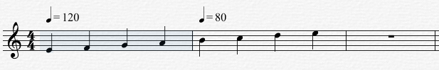
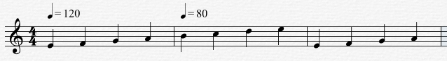
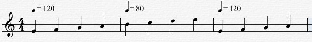

Edit Menu>Paste Special...
Choose this command to perform a more complete and user-definable paste operation than is possible using simply the Paste command. Overture's Paste command does not copy all symbols from the Clipboard into the score. Overture's Paste Special command pastes all gives you the option of pasting meters, beat charts, tempo changes, lyrics, chord names, or measure text.
Paste and Paste Special
The following example shows the difference between the Paste and Paste Special commands:
Assume you have the score below, and that you want to copy notes from the first measure and paste them into the third.

To maintain the tempo pattern you'd already established in the second measure:
- Copy the selected notes and symbols from the first measure.
- Using the Arrow Cursor, click in measure #3.
- Choose Edit>Paste or the short cut Ctrl[cmd] + 'V'.
Overture pastes all notes and symbols from the first measure into the third (as shown in the following figure). Notice that measure 3 maintains the tempo set in measure #2.

To have measure 3 change tempo so that it matches the tempo in the first measure:
- Copy the selected notes and symbols from the first measure.
- Using the Arrow Cursor, click in measure #3.
- Choose Edit>Paste Special.
Overture opens the Paste Special dialog box.
- Check the Notes and Tempo Changes options, then click the Done button.
Overture pastes all notes and symbols from the first measure into the third. In addition, it also pastes the tempo from the original measure into measure #3.
